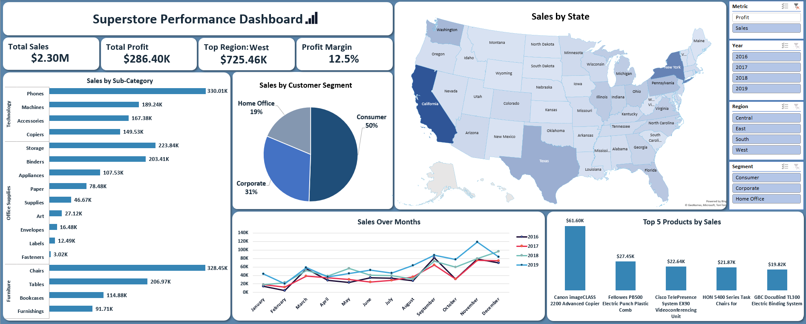

Excel · Sales
Sales performance dashboard for a multi-branch retailer
Developed an interactive executive dashboard to evaluate $2.30M in retail sales across product categories, customer segments, and geographic regions. The dashboard tracks core metrics including overall profitability ($286.40K total profit), regional revenue distribution, and multi-year seasonal sales trends to drive strategic inventory and sales decisions.
- Cut monthly reporting time from 3 days to 2 hours
- Flagged an underperforming category worth 12% of revenue